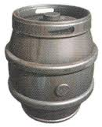

Donkey Kong Country Review
10/2/2014
Released in 1994 for the SNES, Donkey Kong Country showcased amazing graphics and gameplay. This, combined with Rare's knack for creating funny, lovable characters and a superb soundtrack have made this game a classic.
Donkey Kong shocked to find his banana hoard missing.
The plot is basic (and only described in the instruction manual), yet engaging. One dark and stormy night, Donkey Kong the Third (the grandson of the original DK) left his nephew, Diddy Kong, to guard his banana hoard. During the night, evil reptiles called Kremlings landed on Donkey Kong Island in their ship. They then proceeded to overwhelm Diddy Kong, seal him in a barrel, and steal the banana hoard. When Donkey Kong woke up in the morning, he found his bananas and Diddy gone, prompting him to track down the culprits.
The game is divided into a series of worlds, with multiple sidescrolling levels in each. You play as either Donkey or Diddy in a tag team system to reach the end of the level. Their abilities are rolling, jumping, picking up barrels, and clinging to vines. When either kong is touched by an enemy or hazard, they die. If both Kongs die, a life is lost and they return to the level's beginning or the mid-way barrel.
 |
 |
 |
 |
 |
 |
 |
The seven main kinds of barrels.
Another big gameplay element is barrels. If a Kong dies, they can be revived by finding and throwing a DK barrel. Ordinary wooden barrels, far rolling steel barrels, and explosive TNT barrels can all be thrown at enemies. Barrel cannons launch the Kongs either automatically or upon a button being pressed. There is also one mid-way barrel in each level which once touched, will revive the Kongs there when they die.
There are many different unique kinds of levels. Some take place underwtaer; this is dangerous because the Kongs cannot attack and move slower. Other levels have sections where you have to launch through a series of barrel cannons with proper timing. Other unique levels include riding a vine or a flying treadmill to the end.
All of the animal buddies
Animal buddies are other animals who help the Kongs through a level by letting them ride on their backs to the level's end. Rambi the Rhinocerous rams enemies out of the way with his sharp horn. Enguarde the Swordfish moves swiftly through the water, and he can attack with his sword-like nose. Winky the Frog can jump high with his powerful legs and stomp even spiky enemies with his webbed feet. Expresso the Ostrich is fast and can glide, but he lacks the ability to attack. Finally, appearing in only one level, Sqwuaks the Parrot flies ahead and lights the way.
There are also quite a few secrets and collectibles in each level. The letters K, O, N, and G can be found; and collecting them all grants an extra life. There are also gold statues of every animal buddy except Sqwuaks. Collecting three of the same statue brings you to a bonus game where you play as that animal to collect smaller golden statues, 100 of which grant an extra life. Finally, in each level there is at least one secret barrel cannon or false wall that leads to a bonus room or mini-game. Though the minigames only grant letters, statues, lives, and bananas (100 of which also grant an extra life), you must visit every secret room to get a perfect 101% completion.

The map for world 2: Monkey Mines
Completing a level causes the next one to appear on the map, progressing until a boss stage is reached, completion of which unlocks the next world. Other Kongs can also be visited via the map. Cranky Kong (the original Donkey Kong) gives cryptic advice while rambling about all this "new fangled" 16-bit technology. Funky Kong transports you to other worlds via his barrel jet (you can't leave without him). Finally, Candy Kong saves your progress in her special save barrel.
Donkey Kong Country has almost no flaws except that animal buddies are fairly rare, and there is not much of a reward for completing mini-games. These don't harm the game very much though, and are improved in the sequels. Overall, the gameplay is great, the soundtrack superb, and the difficulty hard, but not annoying. This, and a lack of cons makes the game a fun and unique experience. Now go dust off your SNES and help Donkey Kong the Third reclaim his banana hoard!
| Story | 7.5/10 |
| Gameplay | 8.5/10 |
| Controls | 8.5/10 |
| Graphics | 9/10 |
| Music | 9.5/10 |
| Replay | 8/10 |
| Overall | 8.5/10 |